مقالههاى اين بخش
- 23 فروردین 1388

ماندن یا رفتن؟
خبرنامه امیرکبیر
- 22 فروردین 1388
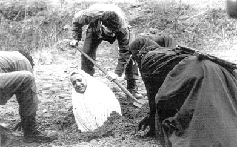
قوانین نابرابر
ایران امروز
- 21 فروردین 1388
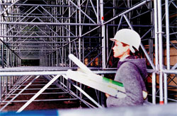
زنان و قوانین تبعیض آمیز
کانون زنان ایرانی
- 20 فروردین 1388
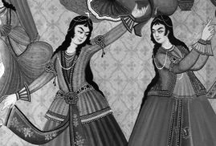
جایگاه و نقش روسپیان
اثر
- 19 فروردین 1388
تعهدات بين المللي
روزآنلاین
- 18 فروردین 1388
گفت و گو با دکتر مهرداد درویشپور، جامعهشناس و استاد دانشگاه سوئد
رادیو زمانه
- 16 فروردین 1388
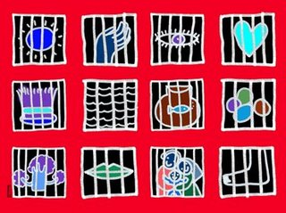
زنان زندانی
نقطهالف در نقطهی الف
- 15 فروردین 1388

سياست جنسی در ايران معاصر
بی بی سی
- 13 فروردین 1388

جایزه ها و دولت ها
رادیو فردا- رویا کریمی
- 10 فروردین 1388
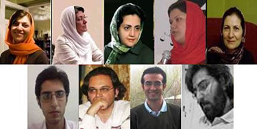
عیددیدنی
وبلاگ پویا
- 8 فروردین 1388
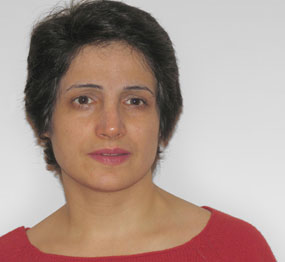
نسرین ستوده:
دویچه وله
- 7 فروردین 1388
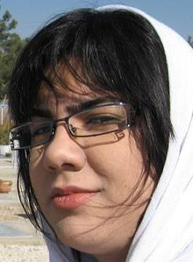
بازتاب
خبرنامه امیرکبیر
- 6 فروردین 1388
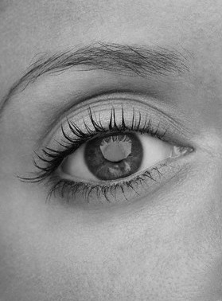
نگاه خیره قربانی
رخداد
- 4 فروردین 1388
مثالهاي مستندي از سیاستهای بازگرداندن زنان به صد سال قبل
میدان زنان
- 2 فروردین 1388
دکتر صدیقه وسمقی ،استاد فقه و حقوق دانشگاه تهران
کانون زنان ایرانی
- 2 فروردین 1388
يك سال با حقوق بشر
روزآنلاین
- 28 اسفند 1387

ازدواج، طلاق و خودکشی زنان در گفت و گو با گلاله، دختری اهل سنندج
- 27 اسفند 1387
گفت و گو با خانم پروين ذبيحی، فعال حقوق زنان و کودکان و یکی از پایه گذاران کمیته علیه خشونتهای ناموسی و خانم ژینا مدرس گرجی
رادیو زمانه
- 27 اسفند 1387
به یاد پوران بازرگان و به مناسبت ۸ مارس
اخبار روز
- 25 اسفند 1387
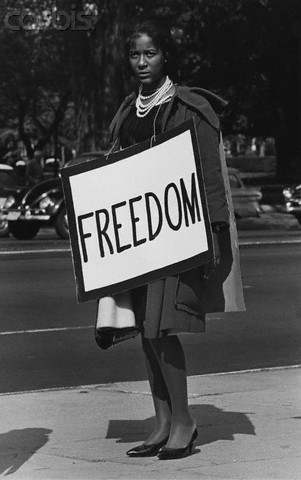
آیا جنبش زنان ممکن است؟
رخداد
- 25 اسفند 1387

تفکیک جنسیتی
رادیو فرانسه
- 25 اسفند 1387
خشونت علیه زنان
کمیته علیه خشونت های ناموسی
- 24 اسفند 1387
تبعیض علیه زنان
خبرنامه گویا
- 24 اسفند 1387
به مناسبت ۸ مارس،روز جهانی زن
عصر نو
- 23 اسفند 1387

زنان و حس خوشبختی
رادیو فرانسه
- 23 اسفند 1387
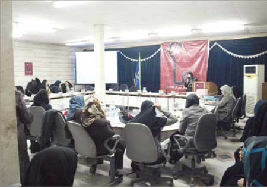
در همایش زن سی سال پس از انقلاب مطرح شد
فرهنگ آشتی
- 23 اسفند 1387

نگاهی به لایحه تسهیل اشتغال زنان
فرهنگ آشتی
- 23 اسفند 1387
گفت و گو با دلارام علی از فعالین کمپین یک میلیون امضا
رادیو زمانه
- 22 اسفند 1387
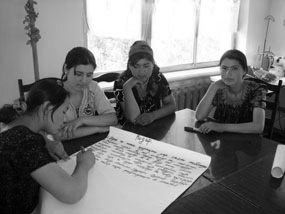
گفت و گو با گیسو جهانگیری، مدیر سازمان بینالمللی آرمانشهر در فرانسه و فعال حقوق زنان
رادیو زمانه
- 22 اسفند 1387
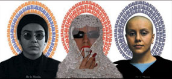
ویژه 8 مارس
رادیو زمانه
| ... | | | | | 1230 | | | | | ... |